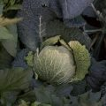
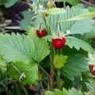
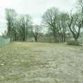
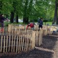
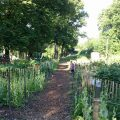
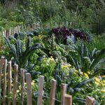
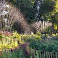

Bellevue Farm är en tillsammansodling som drivs av oss i den ideella föreningen Norrmalmsodlarna. Vi sår och skördar gemensamt i en öppen och inkluderande anda. För oss är kunskapsförmedlingen lika viktigt som själva odlandet. I det lilla perspektivet handlar det om hur vi lär oss av varandra, men vi vill också sprida kunskap om t ex hållbarhet, ekosystemtjänster och stadsodling långt utanför vår trädgårds gränser.
 Att hitta en offentlig möjlig odlingsyta i Stockholms stentätaste stadsdel har varit en utmaning och en lång process. Särskilt eftersom vår vision sträcker sig långt utöver att sätta upp ett par pallkragar och peta ner några frön. Men efter ett par års dialog med Stadsdelsförvaltningen Norrmalm för att hitta den rätta platsen fick vi till slut vårt brukaravtal och våren 2016 kunde vi ta första spadtaget i Bellevueparken. Alldeles intill Brunnsviken men också granne med den framtida, nya och täta Hagastaden.
    Grundtanken är att skapa en plats för odling som på olika sätt och nivåer gynnar biologisk mångfald och skapar ekosystemtjänster samtidigt som stadsdelens medborgare får en mötesplats och kan odla. Stadsodling är en rörelse som har flera ben och intressen; skapa en större biologisk mångfald i stan, social interaktion mellan medborgare, kunskapsförmedling kring odling och naturens förmågor och få fram närodlad mat.
Visionen är att Bellevue Farm kommer vara en plats där odlare kan träffas och tillsammansodla, men även att platsen kan vara öppen och tillgänglig även för den som inte i dagsläget är intresserad av att odla.
Vår målsättning är att basen består av ätliga perenner, buskar och träd inspirerade av permaculture/skogsträdgårdsodling. De perenna odlingssystemen förlänger odlingssäsongen och är mindre skötselkrävande. Odlingen är en Tillsammans-odling dvs odlingarna är gemensamma, sköts och skördas gemensamt. Vi kommer även ha ”de klassiska” stadsodlingslådorna för att främst odla ettåriga grönsaker och kunna ha skolprojekt och kurser. Ett viktigt nav för att etablera platsen blir att bygga en pergola med mat, sittplats och griffeltavla/anslagstavla. Denna plats kan både fungera som plats för måltider, inbjudna gäster att föreläsa, ha workshops, samla regnvatten mm . Det blir också viktigt att kunna ha någon form av trädgårds/verktygsbod eftersom inga andra verksamheter finns nära som vi kan samarbeta med kring förvaring och platsen ligger en bit från befintliga bostadsområden idag. I framtiden är ambitionen att denna bod utvecklas till att även rymma cafe verksamhet. Förutom mat till människor vill vi göra jord genom kompostering och bygga insektshotell för de vilda pollinatörerna och plantera in pollen och nektarrika växter för en lång säsong på ”ängen”. Ytterligare ett projekt som ingår i platsvisionen är att visa på olika växters förmåga till att rena marken från gifter genom fytoremediering.
Vi vill bjuda in både experter kring biodling, ekosystemtjänster, konstnärer, odling, mat, att dela plats och erfarenheter med oss.